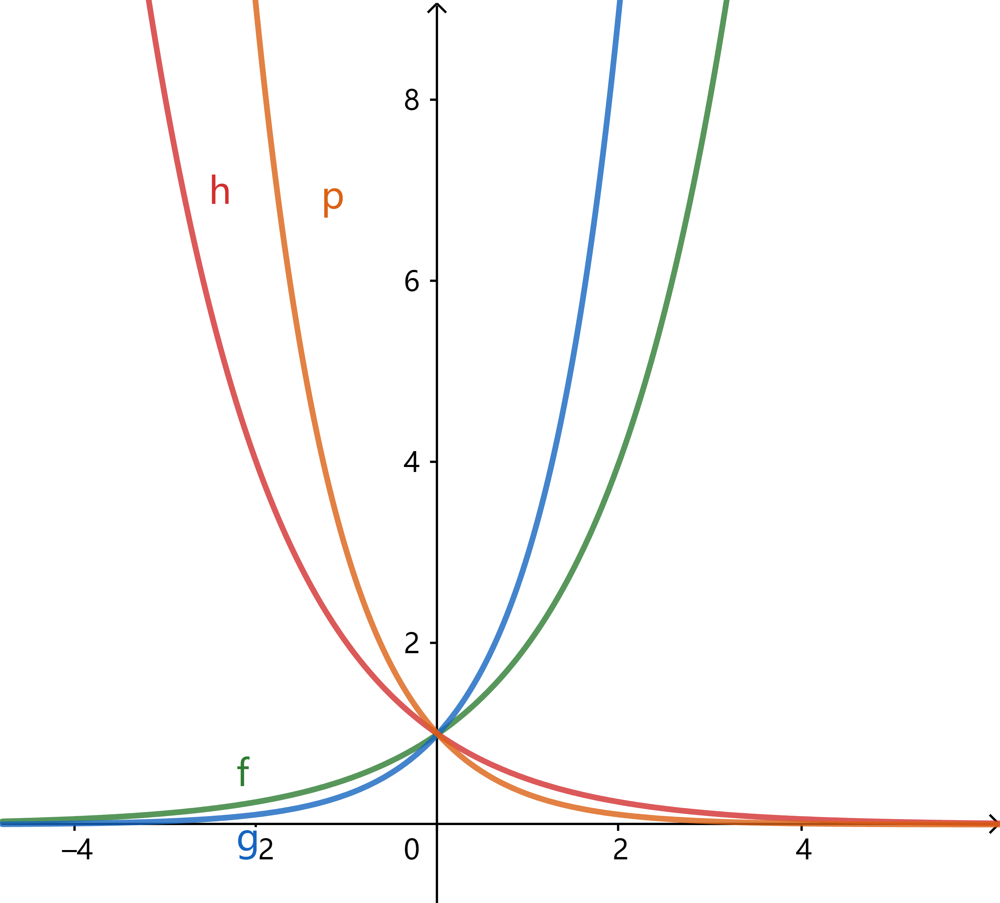

计算: $$\frac{\left(2 x^{\frac{1}{4}} y^{-\frac{2}{3}}\right) \cdot\left(-3 x^{\frac{1}{4}} y^{\frac{1}{3}}\right)^{3}}{4 x y^{-\frac{2}{3}}}; $$ $$ 2 a^{\frac{1}{4}} b^{-\frac{1}{3}} \div\left(-\frac{1}{8} a^{-\frac{1}{4}} b^{-\frac{2}{3}}\right). $$
(1)若 \(x>0\) , 则 \(\left(2 x^{\frac{1}{4}}+3^{\frac{3}{2}}\right)\left(2 x^{\frac{1}{4}}-3^{\frac{3}{2}}\right)-4 x^{-\frac{1}{2}}\left(x-x^{\frac{1}{2}}\right)=\) (2)化简: $$ (1+2^{-\frac{1}{32}})(1+2^{-\frac{1}{16}})(1+2^{-\frac{1}{8}})(1+2^{-\frac{1}{4}})(1+2^{-\frac{1}{2}}). $$
(1) 已知 \(\sqrt{3 x-2}-\sqrt{(4-6 x)^{3}}=(x+y-1)^{2}\) , 则 \(x^{\frac{1}{y}}\) 的值为 (2）若 \(\sqrt[6]{4 a^{2}-4 a+1}=\sqrt[3]{1-2 a}\) , 则实数 \(a\) 的取值范围是 \(\mathrm{A}.\quad a \in \mathbf{R} \quad \mathrm{B}.\quad a=\frac{1}{2} \quad \mathrm{C} \quad a>\frac{1}{2} \quad \mathrm{D} \quad a \leqslant \frac{1}{2}\) (3) 若 \(x^{-\frac{2}{3}}=2\) , 则 \(x=\) .
曲线 \(f,g,h,p\) 分别是 \(f(x)=a^x,g(x)=b^x,h(x)=c^x,p(x)=d^x\) 的图像, 判断 \(a,b,c,d,1\) 的大小关系. 
(1)若函数 \(f(x)=a^{3x-b}+1(a>0,a\neq1, b\in \mathbb{R})\) 的图像恒过定点 \((1,m)\) , 求 \(b,m\) 的值.
(2)在下图中, 二次函数 \(y=ax^2+bx\) 和指数函数 \(y=(b/a)^x\) 的图像只能是. (3)要得到函数 \(y=2^{1-2 x}\) 的图象, 只要将函数 \(y=\left(\frac{1}{4}\right)^{x}\) 的图象 ( ).
A. 向左平移 \(1\) 个单位
B. 向右平移 \(1\) 个单位
C. 向左平移 \(\frac{1}{2}\) 个单位
D. 向右平移 \(\frac{1}{2}\) 个单位
(3)要得到函数 \(y=2^{1-2 x}\) 的图象, 只要将函数 \(y=\left(\frac{1}{4}\right)^{x}\) 的图象 ( ).
A. 向左平移 \(1\) 个单位
B. 向右平移 \(1\) 个单位
C. 向左平移 \(\frac{1}{2}\) 个单位
D. 向右平移 \(\frac{1}{2}\) 个单位
(1)函数 \(y=\left(\frac{1}{3}\right)^{x}(x \geqslant-1)\) 的值域为. (2)若函数 \(f(x)=3^{x}+3^{-x}\) 与 \(g(x)=3^{x}-3^{-x}\) 的定义域均为 \(\mathbf{R}\) , 则（ ) . A. \(f(x)\) 与 \(g(x)\) 均为偶函数 B. \(f(x)\) 为奇函数, \(g(x)\) 为偶函数 C. \(f(x)\) 与 \(g(x)\) 均为奇函数 D. \(f(x)\) 为偶函数. \(g(x)\) 为奇函数
用 \(\min\{a,b,c\}\) 表示 \(a,b,c\) 中的最小的数, 设 \(f(x)=\min\{2^x, x+2, 10-x\}(x\geq0)\) , 求 \(f(x)\) 的最大值.
若函数 \(f(x)=\left\{\begin{array}{l}(a-2) x, \quad x \geqslant 2 \\ \left(\frac{1}{2}\right)^{x}-1, x<2\end{array}\right.\) 是 \(\mathbf{R}\) 上的单调减函数, 则实数 \(a\) 的取值范围是（ ) . A. \((-\infty, 2)\) B. \(\left(-\infty, \frac{13}{8}\right]\) C. \((0,2)\) D. \(\left[\frac{13}{8}, 2\right)\)